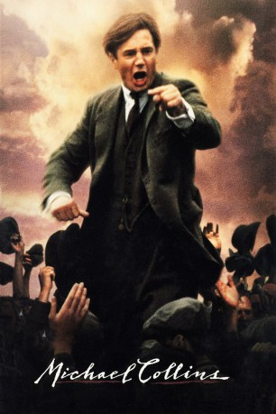

#8455 Michael Collins
 
 IMDB-Wertung: 7.2 / 10
IMDB-Wertung: 7.2 / 10  Tomatometer: 77
Tomatometer: 77  Metascore: 0
Metascore: 0 
Für viele Iren ist er ein Held und einer der größten Freiheitskämpfer: Michael Collins. Während der Osteraufstände 1916 von den Briten verhaftet, lernt er im Gefängnis den Kopf der irischen Untergrundbewegung Eamon de Valera und den jungen Harry Boland kennen. Nachdem er zwei Jahre später wieder auf freiem Fuß ist, erkennt er, dass Irlands Unabhängigkeitskampf anders geführt werden muss.
Jahr: 1996
Dauer: 132 Minuten
FSK: 16
Land: England Studio: Warner Bros.Tonspuren: DD2.0 - ,
Untertitel:
Auflösung: 1080p (1920x1080) Größe: 12288 MB
Genre: Thriller, Drama, Krieg, Biographie
Regisseur: Neil Jordan
Drehbuch: Neil Jordan
Soundtrack: Elliot Goldenthal
Darsteller:
 Ian Hart als Joe O'Reilly
Ian Hart als Joe O'Reilly Julia Roberts als Kitty Kiernan
Julia Roberts als Kitty Kiernan Liam Neeson als Michael Collins
Liam Neeson als Michael Collins Aidan Quinn als Harry Boland
Aidan Quinn als Harry Boland Jer O'Leary als Thomas Clarke
Jer O'Leary als Thomas Clarke- Mike Dwyer als James Connolly
- Martin Murphy als Captain Lee-Wilson
 Alan Rickman als Eamon de Valera
Alan Rickman als Eamon de Valera Sean McGinley als Smith
Sean McGinley als Smith- Gary Whelan als Hoey
 Stephen Rea als Ned Broy
Stephen Rea als Ned Broy- Frank Laverty als Sean McKeoin
- Stuart Graham als Tom Cullen
 Brendan Gleeson als Liam Tobin
Brendan Gleeson als Liam Tobin Gerard McSorley als Cathal Brugha
Gerard McSorley als Cathal Brugha- Owen Roe als Arthur Griffith
- Paul Hickey als Dublin Castle Soldier
 David Wilmot als Squad Youth #2
David Wilmot als Squad Youth #2 Ian McElhinney als Belfast Detective
Ian McElhinney als Belfast Detective Tony Clarkin als Soldier on Station
Tony Clarkin als Soldier on Station Charles Dance als Soames
Charles Dance als Soames- Gary Powell als Black and Tan on Lorry
- Aidan Kelly als Gresham Hotel Bellboy
- Martin Phillips als Officer in Bed
- Malcolm Douglas als Officer in Park
- Peter O'Brien als Pianist in Restaurant
 Jonathan Rhys Meyers als Collins' Assassin
Jonathan Rhys Meyers als Collins' Assassin- Michael Collins als Himself (funeral) (archive footage) (uncredited)
- Karl Dawson als Tenament Boy (uncredited)
- Gareth Molan als Tenement Boy (uncredited)
- Richard Ingram als British Officer
- John Kenny als Patrick Pearse
- Ronan McCairbre als Thomas MacDonagh
- Frank O'Sullivan als Kavanagh
- Owen O'Neill als Rory O'Connor
- Liam De Staic als Austin Stack
- Paul Bennett als Cosgrave
- Claude Clancy als Vaughan's Hotel Clerk
- Tom Murphy als Vinny Byrne
- David Gorry als Charlie Dalton
- Gary Lydon als Squad Youth #1
- Joe Hanley als Squad Man #1
- Colm Coogan als Squad Man #2
- Aiden Grennell als Chaplain at Lincoln Jail
- Dave Seymour als Lincoln Taxi Driver
- Luke Hayden als McCrae
- Max Hafler als Black and Tan on Lorry
- Laura Brennan als Rosie
- Jim Isherwood als Man Following Broy
- Michael James Ford als Black and Tan
Datei: X:\1996\Michael Collins (1996, FSK16, 1920x1080).mkv seit 06.03.2018
Festplatte: HD 1996-2002
 Es gibt insgesamt 78 Filme in der Gruppe '1996'
Es gibt insgesamt 78 Filme in der Gruppe '1996'